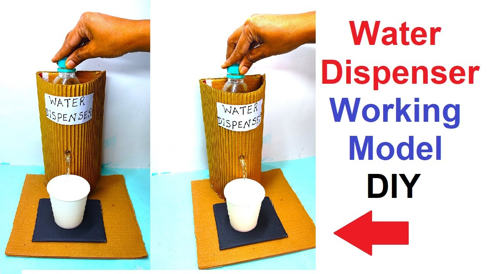

Clean the bottle and remove any labels.
Make a small hole near the bottom of the bottle, large enough to fit the straw or pipe.
Insert the straw or pipe into the hole.
Seal around the pipe with glue to prevent leaks.
Ensure the pipe is angled downwards to allow water to flow by gravity.
Cut a cardboard piece for the base, large enough to support the bottle and prevent tipping.
Cut two more pieces to create a stand, allowing space for a container underneath.

Outcome
Open the bottle slowly while checking for the pressure and amount the water comes out wiht out of the nozzle .
If the water flows out steadily then you have successfully made the water dispenser.